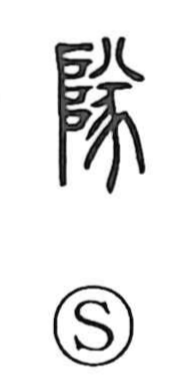

隊

Kun: | On: tai, tsui
troop ・ team ・ group
Explanation
隊 combines 阜, the sacred stairway for a deity's ascent and descent, with a sacrificial animal placed before it. The formation marks the place where the deity comes down. It belongs to the earlier family from which 墜 and the land word 地 developed.
Adding 土 makes the earth-place explicit in 墜. The descent sense then gives falling, dropping, and allowing something to be lost. Bronze inscriptions use a related animal form in promises not to let inherited achievement fall away.
隊 later also names an ordered body of people: a troop, company, or group. This familiar use shares the transmitted writing with the older descent vocabulary.